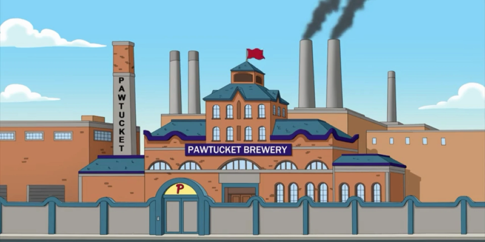
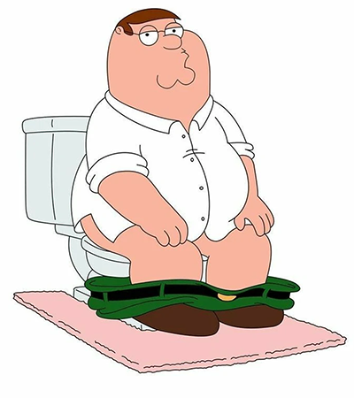
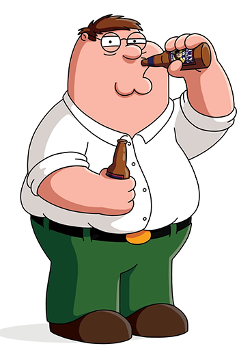
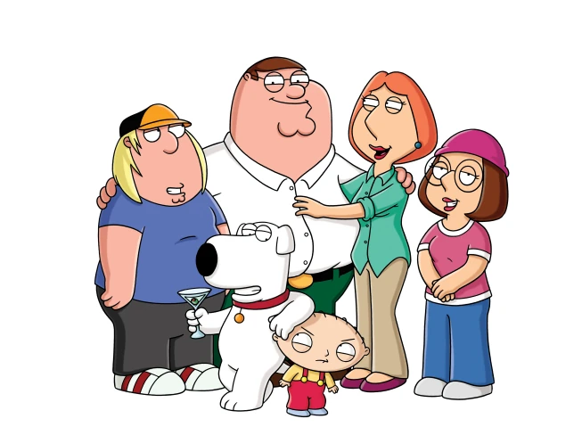
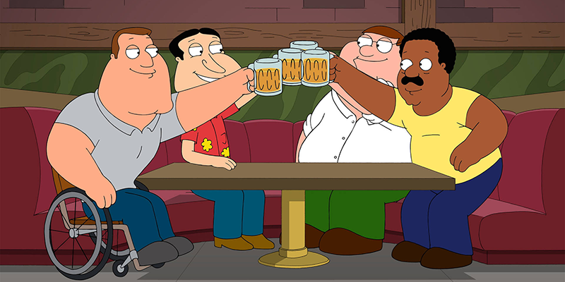

"The key in life is to lie to yourself about reality. Smile through everything. All the bad things, well you just pile them down until they come back in the form of... I dunno, rage?"
Peter Griffin is a fictional character and the main protagonist of the American animated sitcom Family Guy. He and his family live in Quahog, Rhode Island. Peter works at Quahog's shipping department of the Pawtucket Brewery.
Peter's personality traits change from day to day. He is most of the time an inconsiderate, obnoxious husband with a childish sense of humor. But he has also shown that he is a loving, caring man who truly loves his friends and family. Peter's hobbies consist of watching TV and movies, listening to music and playing video games. But his all time favorite pastime is definitely drinking Pawtucket Patriot Ale at The Drunken Clam with his best friends.
Peter Griffin has undeniably proven to be a complete idiot. Every episode features him making stupid, unintelligent comments followed by him doing something ridiculously stupid. He never learns from his mistakes and will always go right back to doing them again. Peter's IQ is 70, which means that he is mentally disabled and is not very knowledgeable about well known things. His best and only real skill is drinking beer.
Peter is married to Lois Pewdershmitt and is the father of Meg, Chris, and Stewie. He also has a dog named Bryan.
His closest friends are:
respectivly left to right.
The following quotes are in no respective order and are just some of my favorites from throughout the series.
— Season 10 "Seahorse Seashell Party"
— Season 1 "The Son Also Draws"
— Season 5 "Hell Comes to Quahog"
— Season 3 "A Fish Out of Water"
— Season 2: “Running Mates”
— Season 8 “Family Goy”